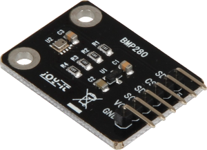
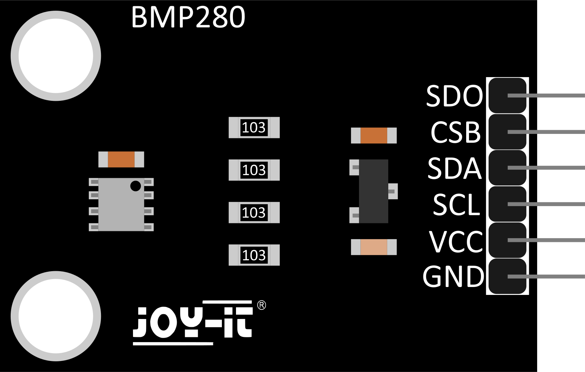
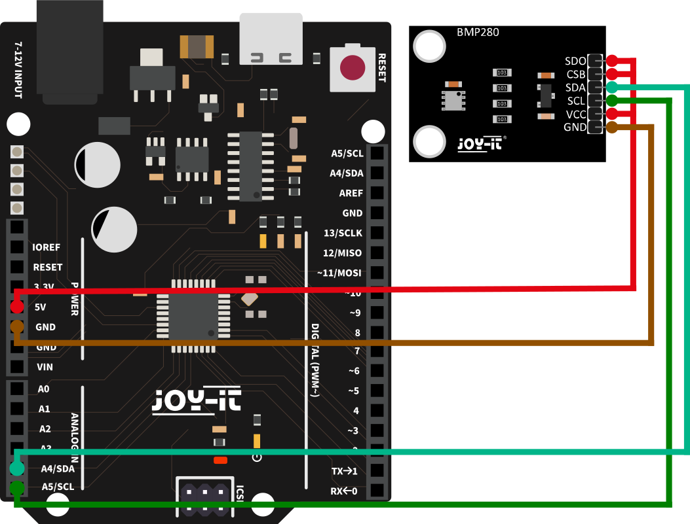
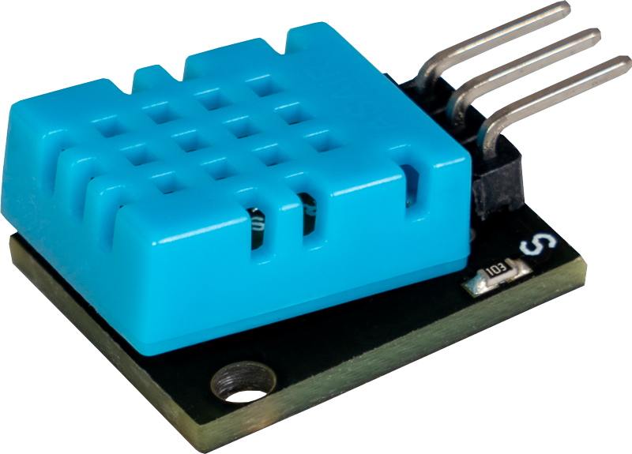
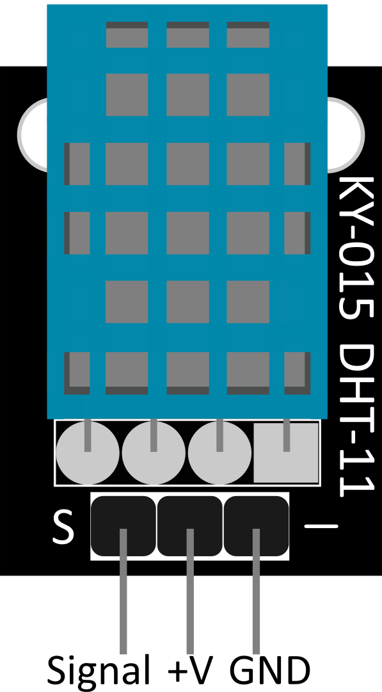
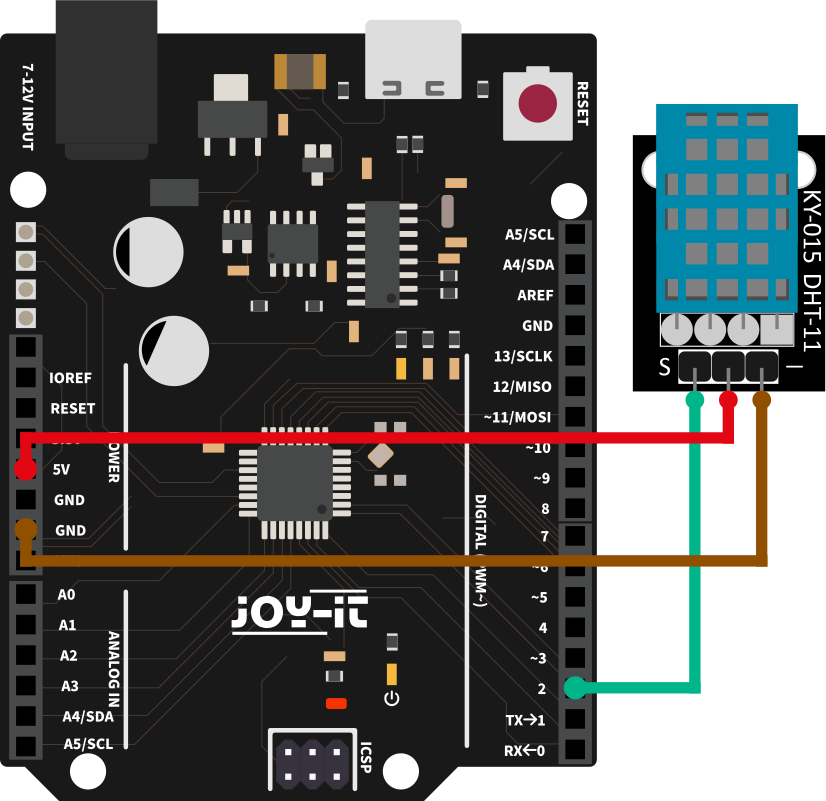

24. Dezember 2026 · Heiligabend
Die Weiße-Weihnachten-Station
Frohe Weihnachten! Zum großen Finale messen der BMP280 und der DHT11 gemeinsam das Wetter – und die RGB-LED verrät, ob es weiße Weihnachten gibt.
Heute im Säckchen
KY-052 Drucksensor / Temperatursensor (BMP280)
Dieser Drucksensor misst den Luftdruck am Sensorausgang und gibt das Ergebnis kodiert auf den I2C-Bus aus.

Der BMP280 ist ein vielseitiger Sensor, der sowohl den Luftdruck als auch die Temperatur misst und die Ergebnisse über den I2C-Bus ausgibt. Mit diesem Sensor kannst du präzise Luftdruck- und Temperaturwerte erfassen, was ihn ideal für Anwendungen wie Wetterstationen, Höhenmesser und mobile Geräte macht.
Er deckt einen breiten Druckbereich ab, der Höhenlagen von +9000 bis -500 Meter über bzw. unter dem Meeresspiegel entspricht. Die gemessenen Daten sind sehr genau, was bedeutet, dass du zuverlässige Informationen zur Umgebungsbedingungen erhältst. Der Sensor kann in einem breiten Temperaturbereich arbeiten, von -40 bis +85°C, was ihn für viele Umgebungen geeignet macht.
Dank der digitalen Schnittstellen (I²C und SPI) kann der BMP280 leicht in verschiedene Mikrocontroller- und Computersysteme integriert werden. Dies erleichtert die Entwicklung von Projekten, die genaue Umweltmessungen erfordern. Der geringe Stromverbrauch des Sensors macht ihn zudem ideal für den Einsatz in batteriebetriebenen Geräten.
Insgesamt bietet der BMP280 eine einfache und effektive Lösung für die präzise Überwachung von Luftdruck und Temperatur, was ihn zu einer wertvollen Komponente für eine Vielzahl von Anwendungen macht.
| Technische Daten | |
|---|---|
| Messbereich (Druck) | 300 bis 1100 hPa (äquivalent zu +9000 bis -500 m über/unter dem Meeresspiegel) |
| Relative Genauigkeit | ±0,12 hPa, äquiv. zu ±1 m (950 bis 1050hPa bei 25°C) |
| Absolute Genauigkeit | ±1 hPa (950 bis 1050 hPa, 0 bis +40 °C) |
| Temperaturkoeffizient Offset | 1,5 Pa/K, entspricht 12,6 cm/K (25 bis 40°C bei 900 hPa) |
| Digitale Schnittstellen | I²C (bis zu 3,4 MHz), SPI (3- und 4-Draht, bis zu 10 MHz) |
| Stromverbrauch | 2,7 µA bei 1 Hz Abtastrate |
| Messbereich (Temperatur) | -40 bis +85 °C |
Anschlussbelegung

Dieser Sensor erlaubt es, sowohl an 5 V Systemen, sowie an 3,3 V Systemen angeschlossen und betrieben zu werden.

| Arduino | Sensor |
|---|---|
| 5 V | SDO |
| 5 V | CSB |
| Pin A4 | SDA |
| Pin A5 | SCL |
| 5 V | +V |
| GND | GND |
Heute im Säckchen
KY-015 Kombi-Sensor (Temperatur & Feuchtigkeit)
Dieser Sensor ist ein Mischung aus Temperatursensor und Luftfeuchtigkeitssensor in einer kompakten Bauform.

Der DHT11 Sensor ist eine Kombination aus Temperatur- und Luftfeuchtigkeitssensor in einer kompakten Bauform. Er misst Temperaturen von 0 °C bis 50 °C mit einer Genauigkeit von ±2 °C und relative Luftfeuchtigkeit von 20 % bis 90 % mit einer Genauigkeit von ±5 %. Aufgrund seiner geringen Abtastrate liefert der Sensor nur alle zwei Sekunden neue Messwerte, was ihn ideal für Langzeitmessungen macht. Der DHT11 ist einfach in Mikrocontroller-Plattformen wie Arduino und Raspberry Pi zu integrieren und erfordert dank werkseitiger Kalibrierung keine zusätzliche Kalibrierung. Seine robuste Bauweise und Zuverlässigkeit machen ihn zur optimalen Wahl für kontinuierliche Überwachungsprojekte wie Gewächshäuser, Klimakontrollsysteme und Lagerüberwachung.
| Technische Daten | |
|---|---|
| Chipsatz | DHT11 |
| Kommunikationsprotokoll | 1-Wire |
| Messbereich | 0°C bis 50°C |
| Messgenauigkeit | ±2°C |
| Messgenauigkeit | ±5%RH |
| Messbare Luftfeuchtigkeit | 20-90%RH |
Anschlussbelegung


| Arduino | Sensor |
|---|---|
| Pin 2 | Signal |
| 5 V | +V |
| GND | GND |
Winterwetter
Zum großen Finale wird der Arduino zur Wetterstation. Heute kommen ausnahmsweise zwei neue Bauteile dazu, denn kein Sensor im Kit misst alles allein: Der BMP280 (KY-052) liefert Temperatur und Luftdruck, der DHT11 (KY-015) die Luftfeuchte. Daraus schätzt das Programm mit einem Augenzwinkern die Chance auf weiße Weihnachten, und die RGB-LED von Tag 5 zeigt das Ergebnis: weiß für Schnee, hellblau für „vielleicht“, grün für grüne Weihnachten.
Verdrahtung
| Komponente | Arduino-Pin | Anschluss am Modul |
|---|---|---|
| KY-052 BMP280 | A4 | SDA |
| KY-052 BMP280 | A5 | SCL |
| KY-052 BMP280 | 5V | SDO (Adresse 0x77) |
| KY-052 BMP280 | 5V | CSB |
| KY-052 BMP280 | 5V / GND | +V / GND |
| KY-015 DHT11 | 2 | Signal |
| KY-015 DHT11 | 5V / GND | +V / GND |
| KY-016 von Tag 5 | 9 / 6 / 5 | LED Rot / Grün / Blau (über Vorwiderstände) |
| KY-016 von Tag 5 | GND | GND |
Beide Sensoren können auch die Temperatur messen. Das Programm nimmt sie nur vom BMP280, der DHT11 ist allein für die Luftfeuchte zuständig.
Ablauf
Alle zwei Sekunden erscheint ein Wetterbericht mit Temperatur, Luftfeuchte, Luftdruck und Schneechance. Kälte, hohe Luftfeuchte und tiefer Luftdruck erhöhen die Schneechance. Das ist ein Spaß und keine Wettervorhersage. Am besten stellst du die Station für den Test kurz ans offene Fenster.
Bibliotheken
Installiere in der Arduino IDE: Adafruit BMP280 Library, DHT sensor library (Adafruit) und Adafruit Unified Sensor.
Deine Knobelaufgabe
Im Programm fehlt der Inhalt der loop()-Funktion. Die Kommentare darin verraten dir, was passieren soll – programmiere es selbst! Die Auflösung findest du morgen, am 1. Weihnachtstag, auf einer eigenen Seite.
// Türchen 24: Winterwetter
// Bibliotheken: Adafruit BMP280 Library, DHT sensor library, Adafruit Unified Sensor
#include <Wire.h>
#include <Adafruit_BMP280.h>
#include <DHT.h>
const char ART[] PROGMEM = R"ART(
* * *
*
* /.\ *
/..'\
* /'.'\ *
/.''.'\
* /.'.'.\ *
/'.''.'.\
^^^[_]^^^
F R O H E W E I H N A C H T E N
Tuerchen 24: Winterwetter
)ART";
Adafruit_BMP280 bmp; // KY-052: Temperatur und Luftdruck, I2C-Adresse 0x77
const int DHT_PIN = 2; // KY-015: hier nur für die Luftfeuchte
DHT dht(DHT_PIN, DHT11);
const int LED_ROT = 9; // KY-016 von Tag 5
const int LED_GRUEN = 6;
const int LED_BLAU = 5;
void setzeFarbe(int r, int g, int b) {
analogWrite(LED_ROT, r);
analogWrite(LED_GRUEN, g);
analogWrite(LED_BLAU, b);
}
// Augenzwinkernde Schneechance: kalt, feucht und tiefer Luftdruck klingen nach Schnee
int schneechance(float t, float feuchte, float druck) {
int chance = 0;
if (t <= 2.0) chance += 40;
if (t <= 0.0) chance += 20;
if (feuchte >= 80.0) chance += 25;
if (druck < 1005.0) chance += 15;
return min(chance, 100);
}
void setup() {
pinMode(LED_ROT, OUTPUT);
pinMode(LED_GRUEN, OUTPUT);
pinMode(LED_BLAU, OUTPUT);
Serial.begin(9600);
Serial.println((const __FlashStringHelper*)ART);
dht.begin();
if (!bmp.begin(0x77)) {
Serial.println("BMP280 nicht gefunden - Verdrahtung prüfen.");
}
}
void loop() {
// Temperatur und Luftdruck vom BMP280, Luftfeuchte vom DHT11 lesen,
// daraus die schneechance() berechnen und als Wetterbericht ausgeben.
// Die LED zeigt: weiß = Schnee wahrscheinlich, hellblau = vielleicht, grün = grüne Weihnachten.
}Grundlagen-Beispiel zu KY-052 Drucksensor / Temperatursensor (BMP280) anzeigen
Code-Beispiel
Dieser Sensor gibt sein Messergebnis nicht als Signal auf seinem Ausgangspin aus, sondern kommuniziert diesen per I2C-Bus. Über diesen lässt sich der Sensor ansteuern und die jeweiligen Messungen zum Druck und der Temperatur starten und auswerten.
Um das folgende Codebeispiel auf deinen Arduino zu laden, empfehlen wir die Verwendung der Arduino IDE. In der IDE kannst du den passenden Port und das richtige Board für dein Gerät auswählen.
Es werden für das Codebeispiel auch die folgenden Bibliotheken verwendet:
Adafruit_BMP280 von Adafruit | veröffentlicht unter der BSD-Lizenz
Diese Bibliotheken kannst du bequem über den Bibliotheken-Manager der Arduino IDE hinzufügen. Kopiere anschließend den unten stehenden Code in deine IDE. Um den Code auf den Arduino hochzuladen, klicke einfach auf den Upload-Button.
/***************************************************************************
This is a library for the BMP280 humidity, temperature & pressure sensor
Designed specifically to work with the Adafruit BMEP280 Breakout
----> http://www.adafruit.com/products/2651
These sensors use I2C or SPI to communicate, 2 or 4 pins are required
to interface.
Adafruit invests time and resources providing this open source code,
please support Adafruit andopen-source hardware by purchasing products
from Adafruit!
Written by Limor Fried & Kevin Townsend for Adafruit Industries.
BSD license, all text above must be included in any redistribution
***************************************************************************/
#include <Wire.h>
#include <SPI.h>
#include <Adafruit_BMP280.h>
// Definiere Pins vom BMP280
#define BMP_SCK 13
#define BMP_MISO 12
#define BMP_MOSI 11
#define BMP_CS 10
// Initialisiere BMP280
Adafruit_BMP280 bmp;
void setup() {
// Initialisiere seriellen Monitor
Serial.begin(9600);
Serial.println(F("KY-052 BMP280 Test"));
// Baue Verbindung mit BMP280 auf
if (!bmp.begin()) {
Serial.println(F("Konnte keinen gültigen BMP280-Sensor finden, Verkabelung überprüfen!"));
while (1);
}
}
void loop() {
// Gebe Messwerte vom BMP280 aus
Serial.print(F("Temperatur = "));
Serial.print(bmp.readTemperature());
Serial.println(" °C");
Serial.print(F("Druck = "));
Serial.print(bmp.readPressure());
Serial.println(" Pa");
Serial.print(F("Höhe = "));
// Dieser Wert muss an den aktuellen Luftdruck deines Standorts geaendert werden
// ansonsten kommt es zu Ungenauigkeiten
// Wetterdienste koennen dir Auskunft geben
// 1013.25 hPa ist der mittlere Luftdruck auf Meereshoehe
Serial.print(bmp.readAltitude(1013.25));
Serial.println(" m");
Serial.println();
delay(2000);
}Grundlagen-Beispiel zu KY-015 Kombi-Sensor (Temperatur & Feuchtigkeit) anzeigen
Code-Beispiel
Um das folgende Codebeispiel auf deinen Arduino zu laden, empfehlen wir die Verwendung der Arduino IDE. In der IDE kannst du den passenden Port und das richtige Board für dein Gerät auswählen.
Es werden für das Codebeispiel auch die folgenden Bibliotheken verwendet:
DHT sensor library von Adafruit | veröffentlicht unter der MIT License
Adafruit Unified Sensor von Adafruit | veröffentlicht unter der Apache License 2.0
Diese Bibliotheken kannst du bequem über den Bibliotheken-Manager der Arduino IDE hinzufügen. Kopiere anschließend den unten stehenden Code in deine IDE. Um den Code auf den Arduino hochzuladen, klicke einfach auf den Upload-Button.
Dieser Sensor gibt sein Messergebnis nicht als analoges Signal auf einen Ausgangspin aus, sondern kommuniziert diesen digital kodiert.
// Adafruit_DHT Library wird eingefügt
#include <Adafruit_Sensor.h>
#include <DHT.h>
#include <DHT_U.h>
// Hier kann der jeweilige EingangsPin deklariert werden
#define DHTPIN 2
// Der Sensor wird initialisiert
#define DHTTYPE DHT11 // DHT 11
DHT dht(DHTPIN, DHTTYPE);
void setup() {
Serial.begin(9600);
Serial.println("KY-015 Test - Temperatur und Luftfeuchtigkeits-Test:");
// Messung wird gestartet
dht.begin();
}
// Hauptprogrammschleife
// Das Programm startet die Messung und liest die gemessenen Werte aus
// Zwischen den Messungen wird eine Pause von 2 Sekunden eingelegt,
// damit beim nächsten Druchlauf eine neue Messung erfasst werden kann.
void loop() {
// Zwei Sekunden Pause zwischen den Messungen
delay(2000);
// Luftfeuchtigkeit wird gemessen
float h = dht.readHumidity();
// Temperatur wird gemessen
float t = dht.readTemperature();
// Hier wird überprüft, ob die Messungen fehlerfrei druchgelaufen sind
// Bei Detektion eines Fehlers, wird hier eine Fehelrmeldung ausgegeben
if (isnan(h) || isnan(t)) {
Serial.println("Fehler beim Auslesen des Sensors");
return;
}
// Ausgabe in die serrielle Konsole
Serial.println("-----------------------------------------------------------");
Serial.print("Luftfeuchtigkeit: ");
Serial.print(h);
Serial.print(" %\t");
Serial.print("Temperatur: ");
Serial.print(t);
Serial.println(" °C ");
Serial.println("-----------------------------------------------------------");
Serial.println(" ");
}Bitte beachte, dass der Sensor nur etwa alle 2 Sekunden ein neues Messergebnis zur Verfügung stellt.
Lösung für Tag 23 anzeigen
// Auflösung zu Türchen 23: Tiefschnee
// Bibliothek: Adafruit ADS1X15
#include <Adafruit_ADS1X15.h>
const char ART[] PROGMEM = R"ART(
50 -| * . *
40 -| . * .
30 -| * . *
20 -|##############
10 -|##############
0 -|##############
Tuerchen 23: Tiefschnee
)ART";
Adafruit_ADS1115 ads;
const float MAX_SPANNUNG = 5.0; // Poti zwischen 5 V und GND
const float MAX_SCHNEE_CM = 50.0;
void setup() {
Serial.begin(9600);
Serial.println((const __FlashStringHelper*)ART);
ads.setGain(GAIN_TWOTHIRDS); // Messbereich +/- 6,144 V, wie im Artikel
if (!ads.begin()) {
Serial.println("ADS1115 nicht gefunden");
}
}
void loop() {
float volt = ads.computeVolts(ads.readADC_SingleEnded(0));
float schnee = constrain(volt / MAX_SPANNUNG, 0.0, 1.0) * MAX_SCHNEE_CM;
// Schneedecke als Balken: ein Zeichen pro 2 cm
int balken = schnee / 2;
Serial.print('|');
for (int i = 0; i < MAX_SCHNEE_CM / 2; i++) {
Serial.print(i < balken ? '#' : ' ');
}
Serial.print("| ");
Serial.print(schnee, 1);
Serial.print(" cm (");
Serial.print(volt, 4);
Serial.print(" V) ");
if (schnee < 1) Serial.println("Nur grüne Wiese ...");
else if (schnee < 10) Serial.println("Ein Hauch von Puderzucker.");
else if (schnee < 30) Serial.println("Genug für eine Schneeballschlacht!");
else Serial.println("Weiße Weihnachten! Der Schlitten kann raus.");
delay(1000);
}